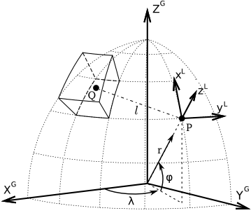

| |
Tesseroids 1.0: User Manual and API Documentation |
AboutTesseroids is a software package for the direct modeling of gravitational fields in spherical coordinates. It can model the gravitational potential, acceleration and gradient tensor. The geometric element used in the modelling processes is a spherical prism, also called a tesseroid. Tesseroids is coded in the C programming language, making it portable to GNU/Linux and Windows systems. This software is developed by Leonardo Uieda in cooperation with Carla Braitenberg with some funding from GOCE Italy.

View of a tesseroid, the computation P and it's local coordinate system. For more information on the theoretical aspects of the computations, see the Theoretical background. DownloadTesseroids can be downloaded from our Google Code project site as both precompiled binaries and source code. LicenseTesseroids is free software available under the GNU General Public License v3+. It is distributed in the hope that it will be useful, but WITHOUT ANY WARRANTY; without even the implied warranty of MERCHANTABILITY or FITNESS FOR A PARTICULAR PURPOSE. See the GNU General Public License for more details. ContactIn case of doubts, suggestions, help, etc., contact Leonardo Uieda: leouieda@gmail.com |
 1.7.4
1.7.4